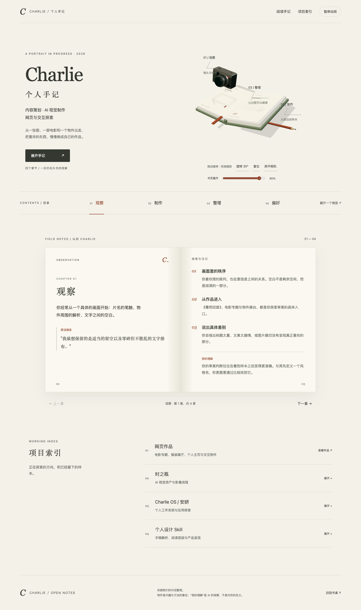
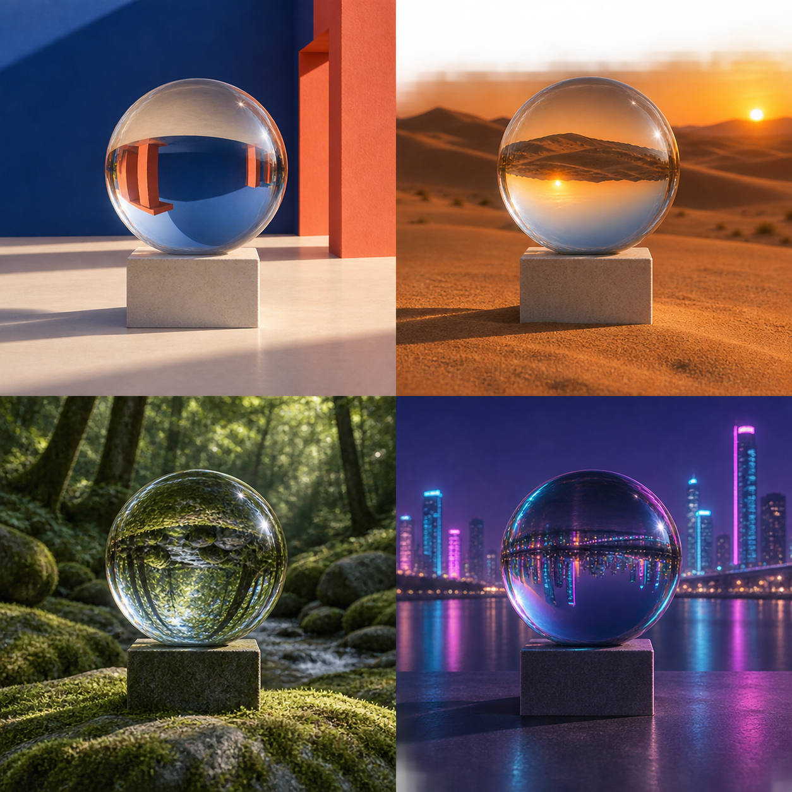
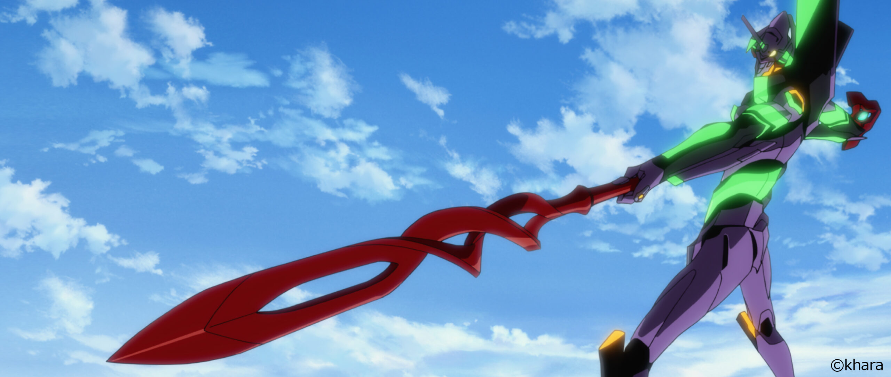
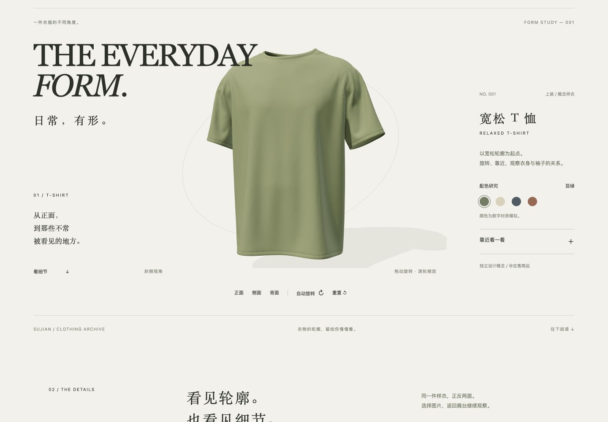
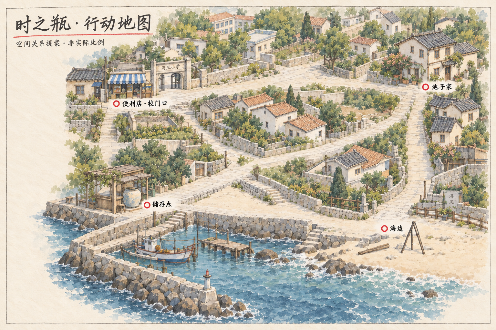
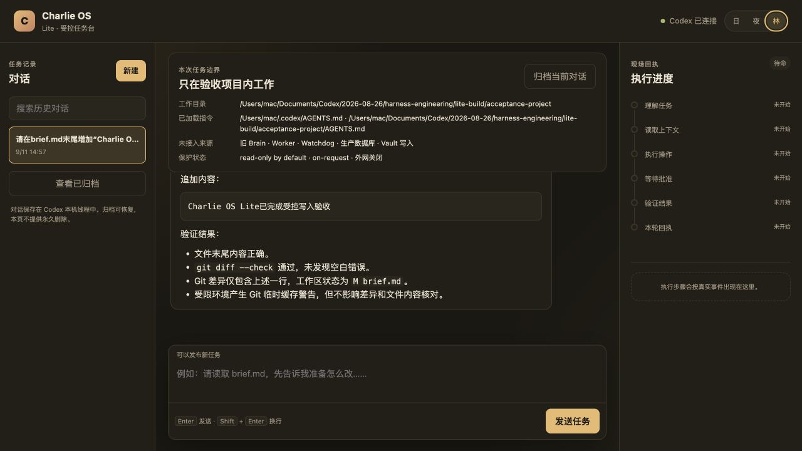
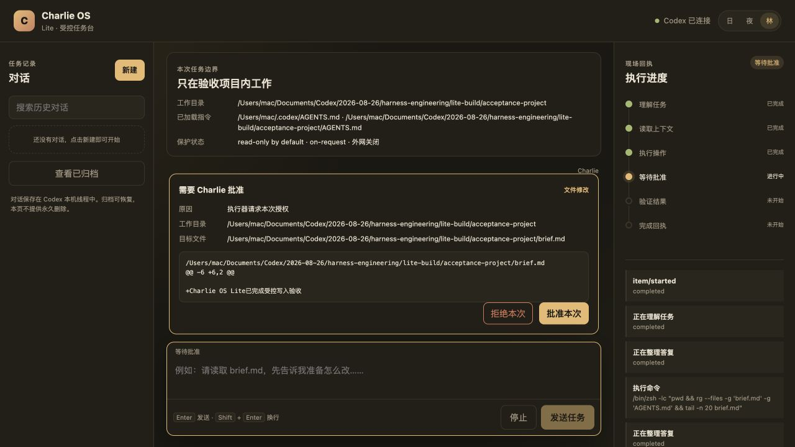

ARC / 001手机壳结构展台
分层拆解
配色切换
部件与说明联动
概念模型 · 非在售产品
一本书，一台相机，
还有正在成形的页面。
11 个独立网页，按主题浏览。
三维展台、电影专题与视觉资料。
分层拆解
配色切换
部件与说明联动
概念模型 · 非在售产品

打开作品 ↗封面为第一版截图 · 入口为当前互动版

打开作品 ↗另附结构主义版本入口
对照版本：结构主义 ↗三维检视
内部结构
分层观察
机械概念展示 · 非工程图
节流状态
尾焰变化
模型检视
工作状态示意 · 非工程仿真
部件点选
剖视拆解
手稿动效实验
独立风格实验
 打开作品 ↗
打开作品 ↗个人练习 · 影片影像版权归原权利人

打开作品 ↗个人练习 · 影片影像版权归原权利人
个人练习 · 影片影像版权归原权利人

打开作品 ↗个人展示原型 · 实际页面截图

打开作品 ↗AI 辅助视觉开发 · 非已完成影片
当前个人展示主页作为总入口；水晶球另保留结构主义对照版。安妍与 Charlie OS 的已有截图在下方产品区。
《时之瓶》 · 原创短片视觉开发
从剧本拆解到角色、场景与镜头计划。

图像由 AI 辅助生成并迭代，人物外形和地理布局为美术提案。已整理60秒分镜与提示词，尚未生成视频成片。
安妍与 Charlie OS 是独立项目。
以下使用已有项目截图。
日常对话中的陪伴体验。
围绕对话、情绪记录与交互节奏构建的 AI 应用探索。这里呈现已有聊天界面，观察温和的配色、消息层级和输入区如何支持连续交流。
作品型 MVP · 持续迭代中。
查看聊天截图 ↗让 AI 的执行过程可看见。
围绕任务对话、操作审批与执行回执组织界面，把“准备做什么”和“实际完成什么”区分开。截图来自 Lite 隔离验收环境。
Lite 隔离原型 · 任务对话与审批流程探索。


拟展示的合作方向。
具体服务范围待确认。
个人主页、品牌介绍、作品展示。
从内容次序开始，做出完整的浏览体验。
三维物件、细节查看、轻量交互。
让观看多一点可以探索的空间。
把抽象描述变成可讨论的页面。
先看到，再调整，逐步确定方向。
下一件作品，
告诉我：你想做什么，以及希望谁看到它。
视觉提案 · 正式联系方式待补充